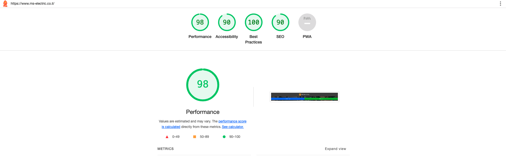

על פי תיקון לתקנות העוסקות בנגישות האינטרנט אתר זה פטור מחובת נגישות
האתר הונגש באופן הבא:
-
התאמת האתר לכל סוגי הדפדפנים המודרניים (כלומר כולם חוץ מאינטרנט
אקספלורר).
- התאמת האתר לכל סוגי הפלטפורמות – מובייל, טבלטים ודסקטופים.
- התאמת האתר מבחינת שימוש במקלדת בלבד.
- התאמת האתר לאנשים עם לקות ראיה חלקית או מלאה.
- התאמת האתר והתכנים באתר לאנשים עם לקות שמיעתית חלקית או מלאה.
על מנת להנגיש את האתר ותכניו, נעשו השינויים הבאים:
-
שינויים ובדיקות באתר על מנת שיתאים לכל הדפדפנים ולכל הפלטפורמות
(ריספונסיביות).
-
בדיקת ניגודיות בצבעים, הוספת טקסט הסבר לכל תמונה באתר כולל במדריכים
השונים, הוספת label בטפסים שונים.
הכלים בהם השתמשתי לבדיקת הנגישות הם:
-
תקן הנגישות עצמו כפי שמפורט באתר ה-W3C.
-
קריטריוני הבדיקה כפי שמופיעים באתר הנגישות הישראלי .
- סריקה ידנית של קוד המקור של האתר.
- שימוש בכלים חצי אוטומטיים כמו google lighthouse
מצ״ב תמונת מסך של אחת מהבדיקות

כפי שניתן לראות, בהנגשת האתר הושקעו זמן ומאמצים מרובים. ייתכן שיש בו
בעיות נגישות בחלק קטן מהדפים.
במידה ויש בעיות נגישות, אשמח מאוד אם יפנו אלי. ניתן לפנות אלי באמצעות
המייל:
dudi.saadi@gmail.com